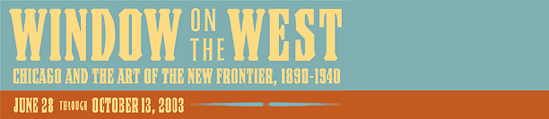

|  | |
|
The Closing of the Frontier
During the 1890s, beginning with the World’s Columbian Exposition in Chicago, a "new" American frontier emerged in art and literature, shaped by waves of nostalgia for a lost past. Even as the actual experience of the frontier receded, artists, ethnographers, writers, patrons, and institutions explored, documented, and preserved different aspects of the West: archaeological facts, ethnographic records, myths, and spirituality. Chicago, the geographic gateway to the American West, became the hub of a redefined artistic frontier—a window on the West. The 1893 World’s Columbian Exposition The Chicago World’s Columbian Exposition showcased the scientific, industrial, and artistic contributions of countries from around the globe. Included amidst the glorious cacophony of sights and experiences of the Midway Plaisance were a significant number of Native American and western subjects, from the Wild West shows of Buffalo Bill Cody to sculptures by such artists as Alexander Phimister Proctor, Henry Bush-Brown, and Cyrus Dallin. Beginning in the 1890s, Chicago artists’ vision of the West began to change. Although their art was rooted in the earlier traditions of painters such as Thomas Cole, these artists tended to embrace the realism of scientific inquiry and ethnography, attempting to preserve history rather than remake it in a romantic vein. A new, modern frontier was created artistically, inspired by the western sculptures and ethnographic displays of the Columbian Exposition, which led artists to look to the West for themes and models, to collect objects and record people. Edward E. Ayer and Ethnographic Collecting One of the most significant Chicago patrons of southwestern art at the turn of the 20th century, Edward E. Ayer contributed to the early holdings of the Newberry Library, the Art Institute, and the Field Museum. Raised in Harvard, Illinois, Ayer joined the U.S. Cavalry during the Civil War and was posted to the Indian Territories. In 1871 he returned to Chicago to start a lumber business, and made his fortune selling railroad ties and telegraph poles to the burgeoning transcontinental railway companies. Traveling incessantly throughout the West and Southwest, Ayer collected Indian artifacts and books on the history of indigenous peoples. He was continually aware of the plight of Native Americans, stating, "We have simply destroyed a great race of human beings, in many of the virtues our superiors." In his quest to preserve Native American culture, he supported the artistic endeavors of the sculptor Hermon Atkins MacNeil as well as his own nephew, the painter Elbridge Ayer Burbank. Over the course of 13 years, with Ayer’s help, Burbank depicted individuals from many tribes and regions. The Arts and Crafts in Chicago Desiring to escape complacency and experience a more authentic and intense life, these artists, advocates of the Arts and Crafts movement, called for a renewal of pre-industrial models in modern craft production. As craftsmen on the East Coast found inspiration in medieval examples of furniture and colonial silver, the Arts and Crafts community of Chicago looked to nature for artistic inspiration—the prairie landscape and its grasses and flowers. After the 1893 World’s Fair, these artists also incorporated the earth colors, organic designs, and abstracted linear compositions of Native American art. Edward Kemeys’s Indian Head Pitcher, like his bas-reliefs for the Marquette Building, incorporates imagined portraits of Native Americans. Even makers of luxury items, such as Tiffany & Company, employed Indian and western themes for objects such as "Pueblo" bowls and "Aztec" silver spurs. The Chicago club system, particularly the Cliff Dwellers Club, provided fertile ground for the exchange of Arts and Crafts ideology. Financier Charles Hutchinson, president of the Art Institute, commissioned Robert Riddle Jarvie to make a silver punch bowl for the Cliff Dwellers Club in 1910. Jarvie fashioned the bowl after the pottery of the Mesa Verde Pueblos, which added balance, simplicity, and sophistication to contemporary silver. Ironically, the severe design makes the punch bowl look modern. Selling the Southwest The explosion of interest in the Southwest as an artistic subject was greatly facilitated by the expansion of a far-reaching railway system and the subsequent development of tourism. Between 1893 and 1920, the Chicago-based Atchison, Topeka and Santa Fe Railway became one of the nation’s most popular rail lines, allowing clean, efficient transportation to the Pacific Coast and Mexico. No longer an arduous adventure, a visit to the Southwest offered a leisurely antidote to the stresses of modern life. Railway agent turned restauranteur Frederick Henry Harvey convinced Santa Fe Railway officials that there was money to be made in providing good restaurants and comfortable hotels to travelers. By the turn of the century, his enterprise had grown to include the luxurious "Harvey Houses," a chain of hotels that would shape the southwestern experience for thousands of visitors. The Harvey House at the Grand Canyon included the Hopi Room, an exhibition and sales venue for Native American crafts such as blankets and pottery. Decorated in southwestern or Mission styles, the Harvey House resorts became destinations in their own right, selling the experience and the products of the Southwest. The Santa Fe Railway and the Harvey Company actively recruited artists to promote southwestern tourism. In 1892, the railway invited painter Thomas Moran to depict the Grand Canyon. In exchange for his travel expenses, they received the right to reproduce Moran’s canvas in advertisements. The success of this publicity campaign led to its expansion. Numerous artists made three-to-four-week excursions with the resulting paintings, drawings, and prints used on promotional literature, dining-car menus, and calendars. Carter H. Harrison Jr. and the Taos Artists The early 20th century saw significant changes to the arts in Chicago. The 1913 Armory Show at the Art Institute heralded the advent of European and American modernism, creating controversy as art students and faculty protested the rise of avant-garde art. In addition, as Chicago became a major economic powerhouse, culturally minded citizens, such as Mayor Carter H. Harrison Jr., began to promote local arts. In office from 1897 to 1915, Harrison acted in both the public and private spheres, supporting artists who painted the daily lives of modern American Indians. In 1914 Harrison launched an important public initiative to aid local artists by allocating an annual purchase fund of a $5,000 to establish the Commission for the Encouragement of Local Art. The commission’s purchases in the first year included works by Gustave Baumann and Walter Ufer, and in the second, by Victor Higgins. These artists also benefited from the mayor’s private acts of patronage. Harrison created a system that offered young artists the opportunity to travel to the Southwest. Harrison’s financial backing boosted the careers of Ufer, Higgins, and Baumann. In addition to selling paintings to patrons, these artists gained recognition in Chicago for their bold Taos paintings, which presented ennobling views of an authentic, pure Southwest. The artists exhibited yearly in various Chicago venues, including the Art Institute, which acquired their works early on and thus provided additional early support for their careers. George Harding’s "Red-Blooded Collection" Unlike the urbane, sophisticated Carter H. Harrison Jr., who favored depictions of contemporary southwestern people and landscapes, George Harding, one of Chicago’s most powerful political allies of newly elected Mayor "Big Bill" Thompson, built a collection of European arms and armor and the frontier paintings and sculptures of Frederic Remington that befitted Harding’s tough public image. He referred to his disparate assemblage of artworks as his "red-blooded" collection. Harding was drawn to Remington’s images of cowboys and Indians, military men, and drama and danger, which promoted an indigenous American culture that incorporated xenophobia and nostalgia for the frontier. Remington offered an idealized view of the frontier as a site of freedom, action, and manliness—aspects that Harding embraced in his rough-and-tumble Chicago life and utilized in his public, political identity. Harding displayed his collection in his South Side home, "The Castle," where it grew to contain more than 60 suits of armor and 250 paintings, including 32 by Remington, and numerous bronze sculptures. After Harding’s death in 1939, the Castle remained open to the public as a museum until the 1950s. The collection came to The Art Institute of Chicago in 1982. Remington’s West Originally from New York, Frederic Remington first went west in the early 1880s. After passing several aimless years as a rancher, he decided to become an artist and spent four weeks sketching troopers and Indians in the Southwest before returning to New York—a move that fortuitously coincided with the headline-grabbing pursuit of Geromino by the U.S. Cavalry in 1885. Selling his illustrations to Harper’s Weekly, Remington launched his career as an illustrator and returned to the West several times during the next decade. Remington’s signature view of the West presented a harsh landscape populated by uncompromising, heroic military men; savage, renegade Indians; hardened, taciturn cowboys and vaqueros—and no women. After years of painting and illustrating, Remington turned to bronze sculpture in 1895 with the enormously popular Bronco Buster, bringing tremendous vitality and kinetic energy to the genre of western sculpture. Native Rhythm: Santa Fe Modernists Beginning in the 1920s, a new generation of artists sought a genuinely American subject matter coupled with spiritual expressiveness and modernist techniques. Just as Picasso’s Cubist works were often inspired by African art, these new artists, now based in Santa Fe, informed their modernist works with a Native American "primitivism." Unlike the Taos Society of painters, the Chicagoans of the Santa Fe school, including Gustave Baumann and William Penhallow Henderson, sought out the essence of Native American culture rather than its everyday details. They found it in the rituals of Indian life: prayer dances, symbolic artifacts such as kachina dolls, and the ruins of and writings on ancient sites. Focusing on design, color, song, and dance, they strove to create an art that both championed personal expression and communicated on a universal level. Also inspired by Sigmund Freud’s theories of the primitive mind, emotions, and dreams, the Santa Fe modernists embraced what they understood as instinctual, primal modes of expression. Like their colleagues in Taos, they continued to exhibit regularly at the Art Institute and other venues in the 1920s, and many of their works entered the museum’s collection. The Path toward Abstraction: Georgia O’Keeffe and the Modern West Unlike the artists of the Santa Fe school, who found inspiration in Native American rituals and dances, the modernists who followed—most notably Georgia O’Keeffe—looked to the southwestern landscape for spiritual and aesthetic release. A former student of The School of the Art Institute of Chicago, O’Keeffe made her first trip to New Mexico in the summer of 1929. That summer, she also met Daniel Catton Rich, then the assistant curator of painting and sculpture at the Art Institute. This was also the year in which O'Keeffe painted one of her most memorable images of the Southwest, Black Cross, New Mexico. Years later in 1942, Rich, now director of the museum, invited O’Keeffe to exhibit her works in January of 1943. The exhibition was her first major museum retrospective and also was the first solo show for a woman at the Art Institute. The spare southwestern paintings struck a chord with Chicagoans, and local critics responded ecstatically, remarking on the universality of the images. Following the exhibition, the museum purchased Black Cross, New Mexico, which Rich selected himself—a tribute to his first meeting with the artist in the summer of 1929. It became the first work by O'Keeffe to enter the collection of the Art Institute. The friendship between artist and director deepened over the years, and when O’Keeffe’s husband, Alfred Stieglitz, died in 1946, she turned to Rich for help in dispersing Stieglitz’s art collection. In addition to works by O’Keeffe, the Art Institute received paintings of the southwestern landscape by her fellow modernists, including the animated New Mexico watercolors of John Marin and the vibrant natural forms portrayed by Marsden Hartley. |
| Last updated: July 2003. Best viewed with Netscape Navigator 4.0 or higher. Reproduction Permission. Copyright © 2003. All rights reserved. |